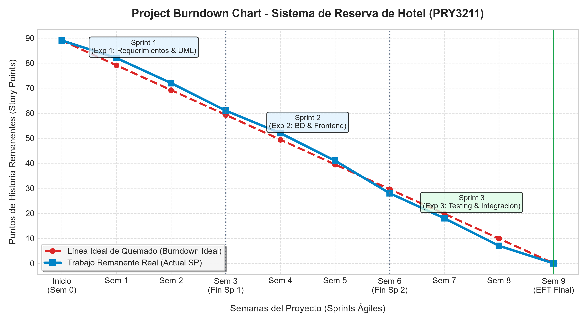

Sistema Web de Reserva de Hotel
Ingeniería de Software (PRY3211)
Estudiante: Adolfo Leal Lara
Carrera: Analista Programador Computacional
Docente Guía: Jorge Antonio Canales Soto
Contexto y Solución del Problema
Problemática de Negocio
Procesos manuales de reserva, falta de visibilidad en tiempo real de disponibilidad de habitaciones y ausencia de conversión cambiaria para turistas internacionales.
Propósito del Sistema
Plataforma web unificada que digitaliza el ciclo completo: búsqueda con validación estricta, cotización dinámica, persistencia segura y panel administrativo.
Actores Principales
Turista: Consulta y reserva habitaciones con cotización multimoneda.
Administrador: Monitorea ocupación, cancela reservas y gestiona el inventario.

Arquitectura y Servidor de Aplicaciones
Servidor de Aplicaciones
Servidor HTTP en Express (`server.js`) con middleware de sesiones en memoria y control de acceso RBAC para aislamiento de rutas.
Persistencia Relacional
Base de datos SQLite (`database.js`) normalizada en 3FN con tablas `Usuario`, `Hotel`, `Habitacion` y `Reserva` con claves foráneas activas.
Aislamiento Estricto por Rol
Middleware interceptor global: bloquea el acceso de turistas a `/admin` y redirige administradores al dashboard de control.
Integración Web Service REST
Consumo de API de divisas con tolerancia a fallos (`try/catch`), validación de parámetros y degradación elegante a CLP.
Demostración en Vivo: Portal Turista

Búsqueda Validada
Validación de reglas de negocio: Check-in obligatorio menor a Check-out. Consulta optimizada de habitaciones disponibles.
Conversor Multimoneda
Petición asíncrona hacia `/api/exchange-rate`: visualización en CLP, USD y EUR en tiempo real sin recargar la página.
Checkout y Comprobante
Generación de reserva transaccional con código de confirmación y resumen detallado del huésped.
Demostración en Vivo: Portal Administrador
Monitor Central de Reservas
Visualización en tiempo real de todas las reservas registradas mediante consultas SQL con uniones relacionales (`JOIN`).
Cancelación Inmediata
Acción de cancelación con un solo clic: actualización a estado 'Cancelada' y liberación automática de la habitación.
CRUD de Inventario
Alta de nuevas habitaciones con número, tipo, capacidad y precio por noche, y eliminación segura de unidades.

Gestión Ágil con Scrum & Tablero Trello
Ciclos de 3 Sprints
Sprint 1: Requerimientos & UML (28 SP)
Sprint 2: BD SQLite & Frontend (33 SP)
Sprint 3: API, QA & Despliegue (28 SP)
Definition of Done (DoD)
Código limpio, integración probada, manejo de errores `try/catch`, pruebas funcionales aprobadas y commit en GitHub.

Project Burndown Chart & Velocidad

Estrategia de QA, Pruebas y No Conformidades
10 Casos de Prueba Funcionales
Cobertura integral: Happy Paths (login, reserva, checkout, CRUD) y Edge Cases (fechas invertidas, rutas denegadas, credenciales erróneas).
Pruebas Automatizadas
Script `test_endpoints.js` ejecutado en consola validando redirecciones HTTP 302 y renderizado 200 con 100% de éxito.
Gestión de No Conformidades
Alineado con normas ISO 9001 / IEEE / ISTQB promovidas por el docente: detección, causa raíz y acción correctiva para la integración front-back.
Tolerancia a Fallos Probada
Resiliencia demostrada ante desconexión de la API externa de tasas de cambio con fallback seguro a moneda local.
Control de Versiones Git & Repositorio

Repositorio Público GitHub
https://github.com/D99L/reserva-hotel.git
Trazabilidad Completa
Commits históricos desde el Sprint 1 hasta el empaquetamiento final de Semana 9, con mensajes descriptivos y branching limpio.
Empaquetamiento Autónomo
Archivo comprimido `.zip` con códigos front-end, back-end, scripts de base de datos y documentación formal.
Conclusiones y Reflexión Profesional
Visión Holística: La ingeniería de software trasciende la codificación: modelar bajo IEEE 830 y 4+1 previene defectos y reduce costos de retrabajo.
Cultura de Calidad: La gestión preventiva de No Conformidades (ISO/ISTQB) garantiza soluciones resilientes ante fallos del mundo real.
Impacto Profesional: Consolidación de competencias clave como futuro Analista Programador Computacional en Duoc UC.
¡Muchas Gracias por su Atención!
Adolfo Leal Lara • Duoc UC • Docente: Jorge Antonio Canales Soto